Ferme-brasserie en Normandie, depuis 1997
Une brasserie artisanale typiquement normande
De l'orge de notre propre production, près de 20 bières artisanales et 5 whiskies fermiers. Et tous les samedis à 15h30, une visite commentée avec dégustation gratuite.
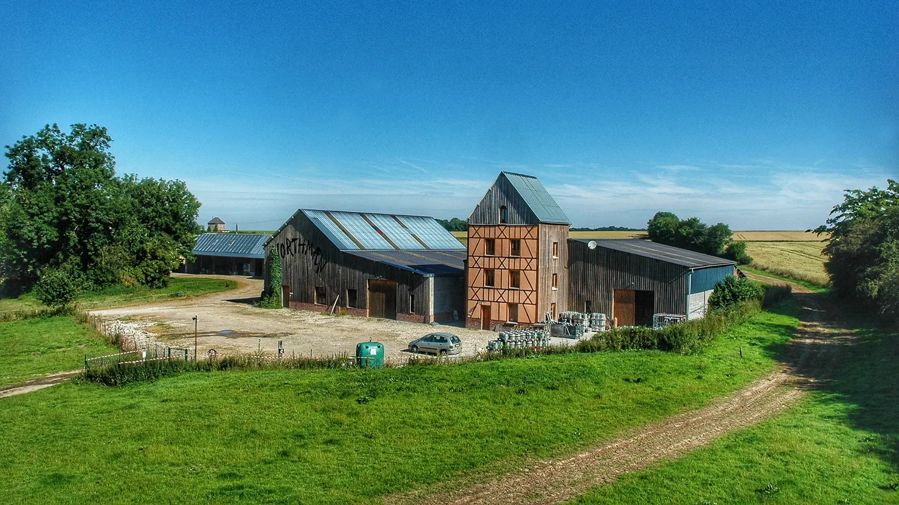
La Chapelle-Saint-Ouen, Normandie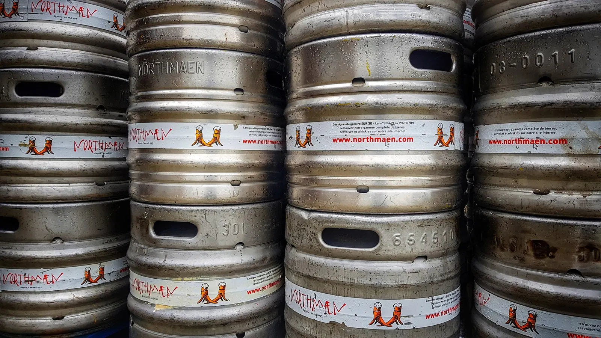
Une bière à la pression, en Normandie et au-delà
- 4500 hlde bière par an, brassés à la ferme
- 20 bièresartisanales : 17 bières et 3 cervoises
- 5 whiskiesfermiers, l'unique gamme normande
- 30 hectarespour cultiver notre propre orge
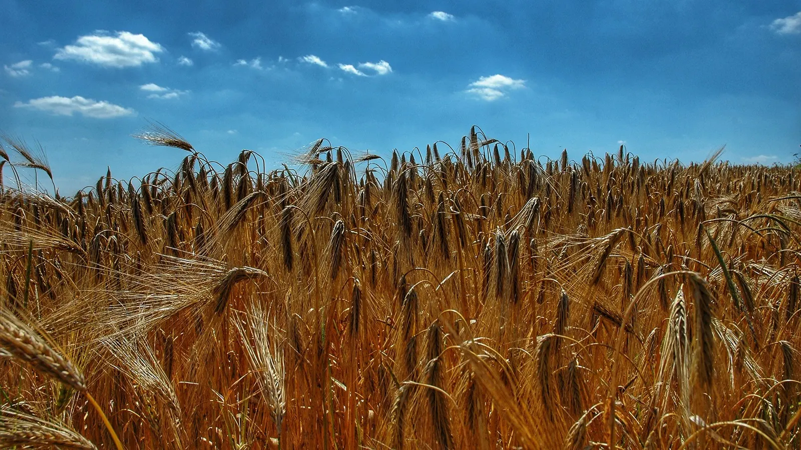
Notre orge, avant la moissonUne recette viking, née dans une vieille étable
C'est au printemps 1997 que Dominique Camus, technicien chimiste plus connu sous le surnom de Léo, s'installe en famille à La Chapelle-Saint-Ouen. Le 1er juillet sortent les bières blonde, ambrée, rousse et brune, brassées selon une tradition « viking » chère au patron : elles deviennent vite les stars des marchés fermiers normands.
Les premières années, la production se fait à deux, dans une vieille étable, avec des tanks à lait. En décembre 1999, Léo prépare discrètement dans sa cave le premier whisky normand, Thor Boyo, qui sortira à Noël 2002.
Le jeune brasseur achète jusqu'à 30 hectares de terres pour cultiver son propre orge : la brasserie devient ferme-brasserie. Elle reste en évolution permanente, sur près de 2000 m², d'où sortent chaque jour 4000 litres de bière, grâce à une équipe impliquée.
Bières & cervoises
Brassées à la ferme avec notre orge, puis une double fermentation. Pour les cervoises, pas de houblon : on procède à une infusion de plantes.
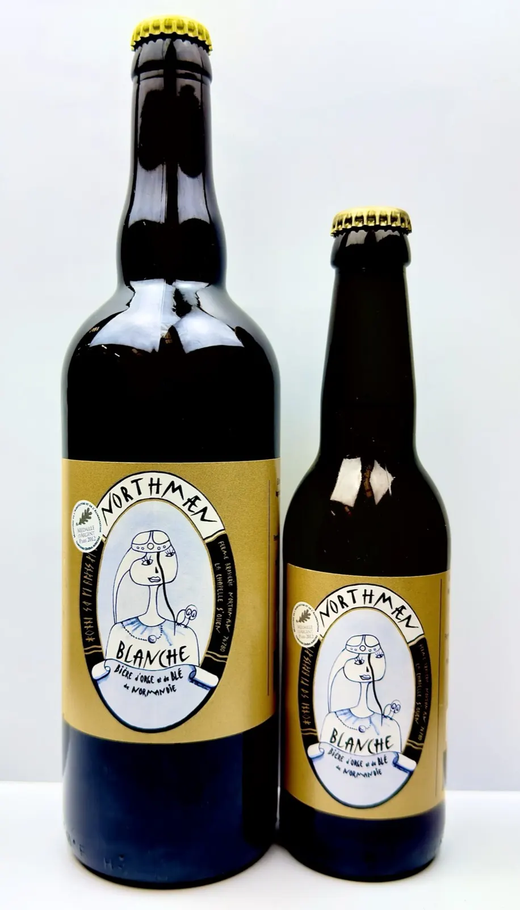
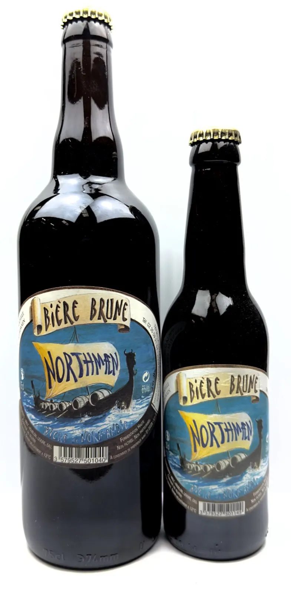
Toute la gamme au catalogue
- Lagertha la blonde
- Ambrée
- La Dame du Lac la rousse
- Knarr la brune
- Blanche
- La Route de Thor IPA
- 11 siècles de Normandie
- OIB Frigg bio
- OIB Hörfrae bio
De 2,50 € à 5 € selon le format, au catalogue en ligne. À la pression dans de nombreux établissements de Normandie et au-delà.
Parmi nos bières
Bière du Débarquement
Une American Pale Ale qui rend hommage aux héros qui ont débarqué en Normandie le 6 juin 1944. Brassée avec de l'orge normand et les houblons warrior et cascade importés par les Américains.
Bière à l'ortie
Brassée avec du malt et de l'orge de Normandie, infusée au houblon et à l'ortie.
Northmæn à la Châtaigne
Une bière fermière de Normandie avec 8 % de châtaigne.
Northmæn de Printemps De saison
Infusée aux réglisses, pour profiter du retour des beaux jours.
Northmæn de Noël De saison
Infusée à l'écorce d'orange douce et d'orange amère.
Parmi nos cervoises
Northmæn Yggdrasill
Une cervoise infusée au frêne.
L'unique gamme de whiskies normands
Des whiskies fermiers issus d'une orge semée, cultivée et récoltée par nos soins. Broyage, brassage, fermentation, distillation, vieillissement en fût et mise en bouteille : tout est réalisé sur place.
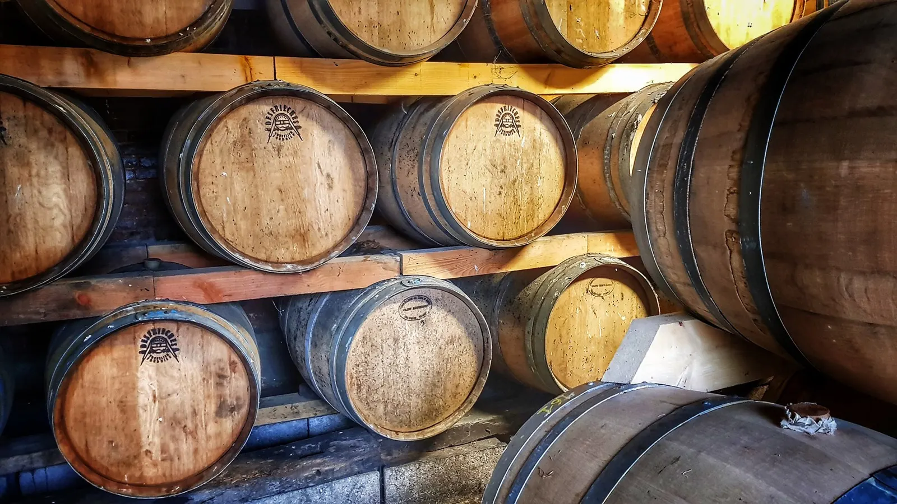
Le chai, vieillissement en fût de chêne- Single malt, 3 ans, 42 %35 €
Thor Boyo
Équilibré, floral et épicé, aux belles notes pâtissières. Médaille d'or au Concours Général Agricole 2017.
- Single malt, 8 ans, 44 %46 €
Sleipnir
Une belle complexité, floral et épicé. Médaille de bronze au Concours Général Agricole 2014.
- Single malt, 5 ans, 43 %57 €
Fafnír
Fumé au bois de hêtre, aux notes suaves et épicées. Médaille d'argent au Concours Général Agricole 2017.
- Single malt, 6 ans, 42,4 %62 €
Kenning
L'influence d'un vieux fût de Sauternes : tout en rondeur, aux notes végétales et boisées.
- Single cask, 10 ans, 53 %78 €
Brut de Fût
La version « cask strength » du Thor Boyo, aux arômes boisés et herbacés.
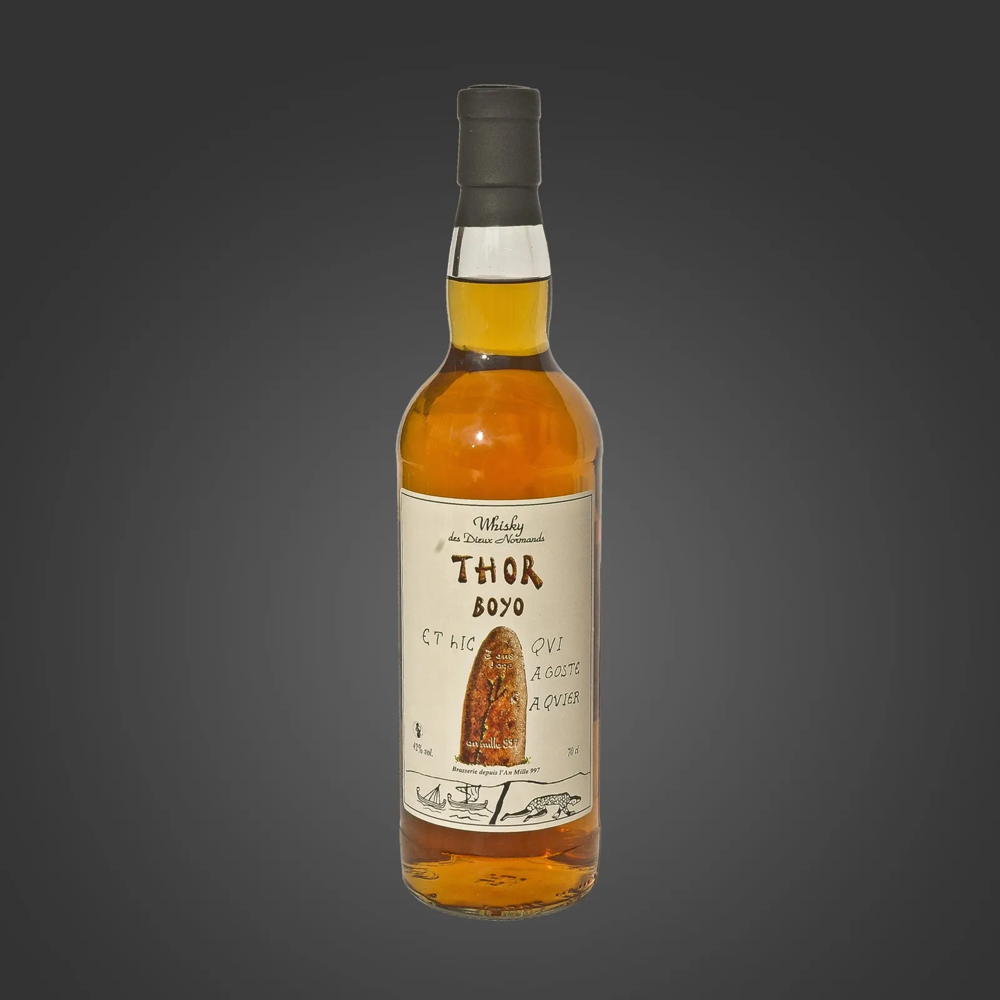
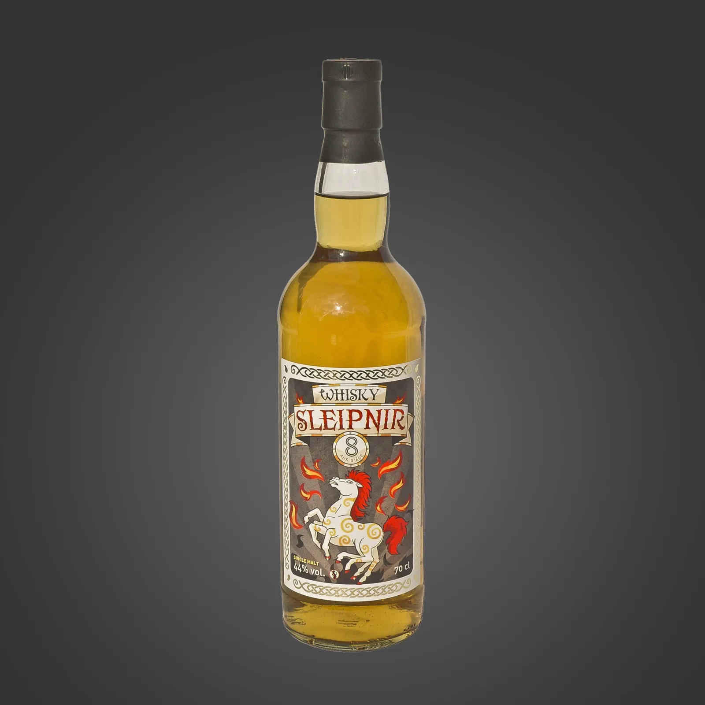
De notre orge à la bouteille
Un brassage par infusion, puis une double fermentation. L'écorce des grains, séparée par filtration, est recyclée en agriculture.
Maltage et brassage
Notre orge est malté, germé puis torréfié, broyé, et finit sa course dans une grande cuve d'eau où l'amidon est extrait pour obtenir un moût sucré.
Ébullition et mise en fermentation
Le moût part en ébullition avec le houblon, ou en infusion de plantes pour les cervoises. On refroidit, puis on ajoute la levure.
Une journéeFermentation et conditionnement
Après la fermentation, la bière est filtrée, mise sous pression, puis conditionnée en fûts ou en bouteilles.
2 à 3 semaines
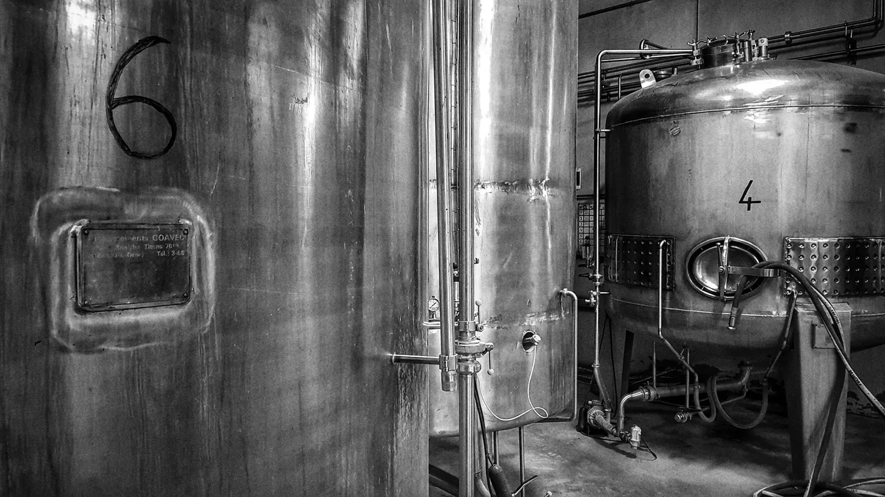
Les cuves de la brasserie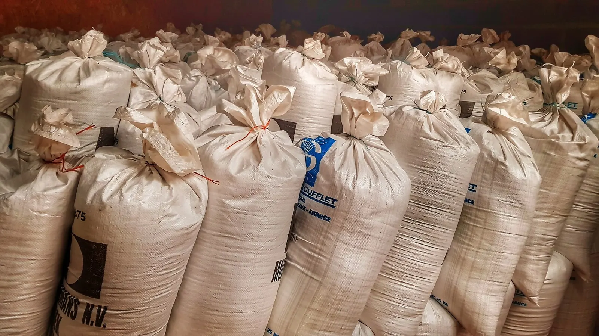
Le malt, en sacsVisite de la brasserie et dégustation
L'équipe de la brasserie vous accueille pour une visite détaillée du site, couronnée par une dégustation gratuite.
15h30Tous les samedis,
sauf jours fériés
Sur réservation au 02 35 09 21 54. Pour les groupes de plus de 10 personnes, prenez rendez-vous par téléphone au préalable.
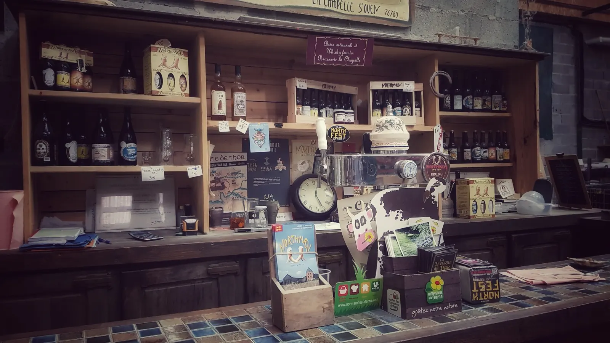
La boutique de la ferme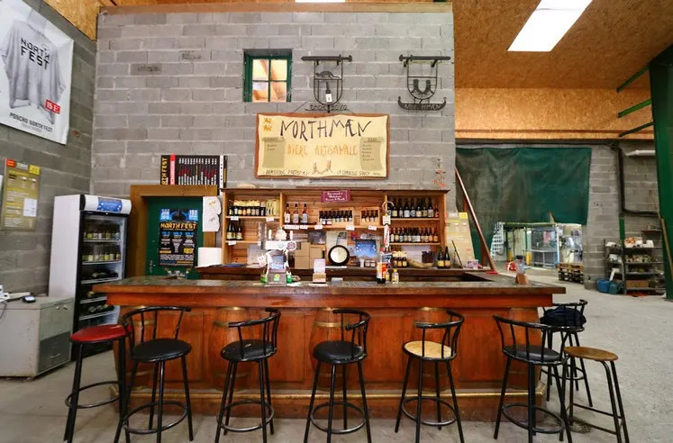
Le comptoir de la brasserie
Pour nous rendre visite
Une question ? Écrivez-nous, ou appelez directement la brasserie aux horaires d'ouverture.
Ferme-brasserie Northmæn
Cervoiserie Northmæn
Le Centre
76780 La Chapelle-Saint-Ouen
Normandie, France
Horaires
Du lundi au vendredi :
9h à 12h et 14h à 18h
Le samedi : 10h à 12h
Joindre la brasserie
Téléphone : 02 35 09 21 54
Mail : ferme.northmaen@gmail.com